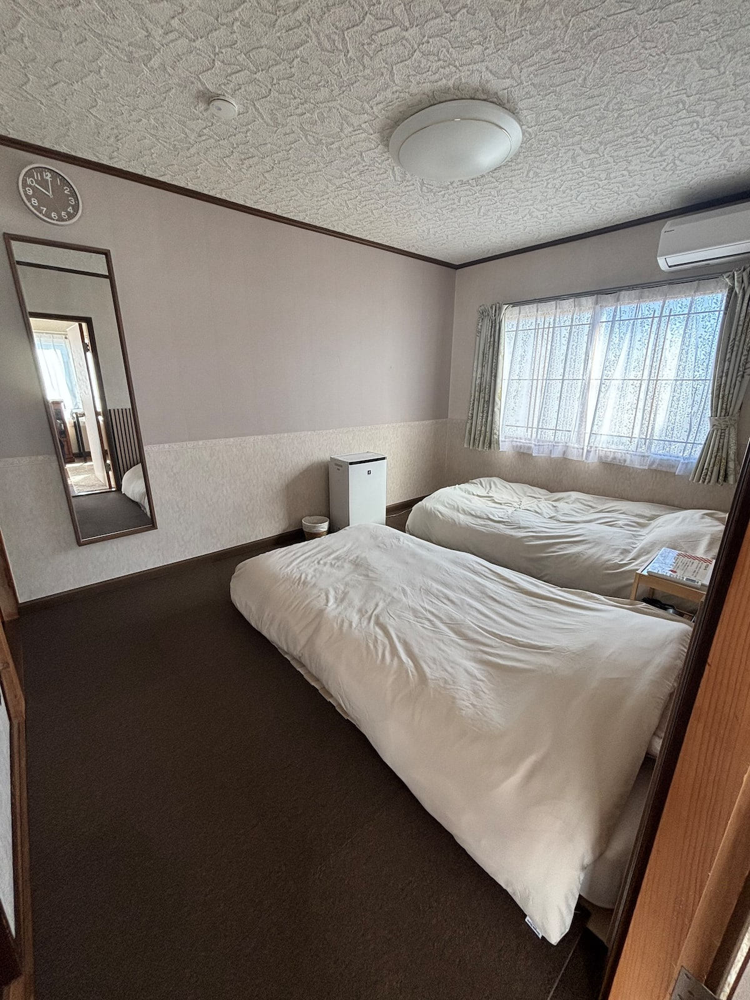
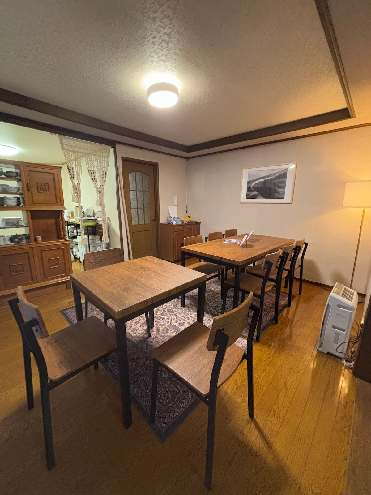
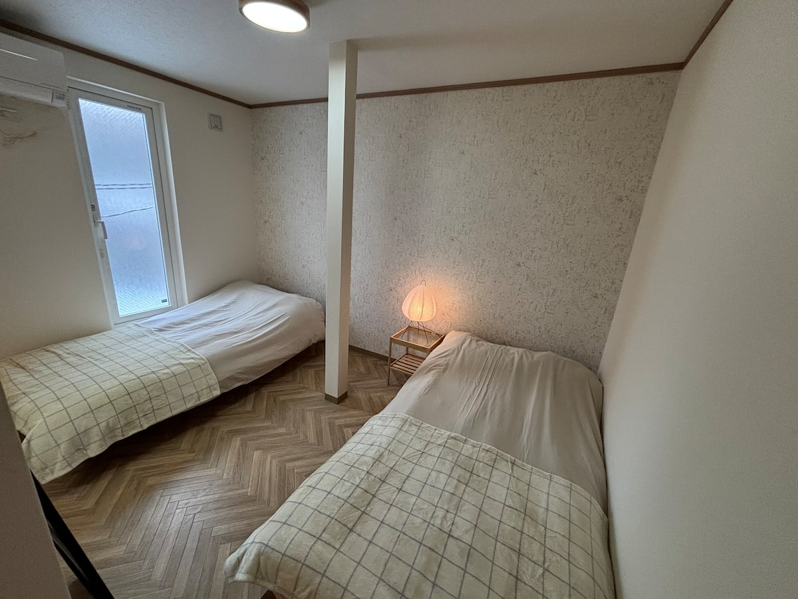
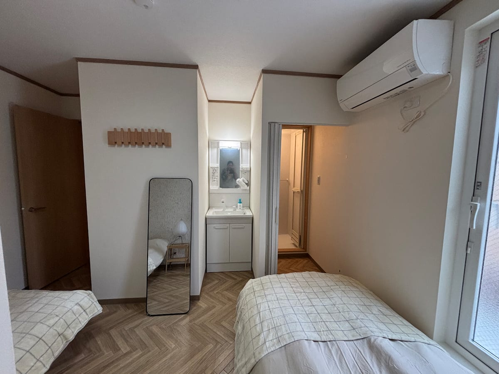
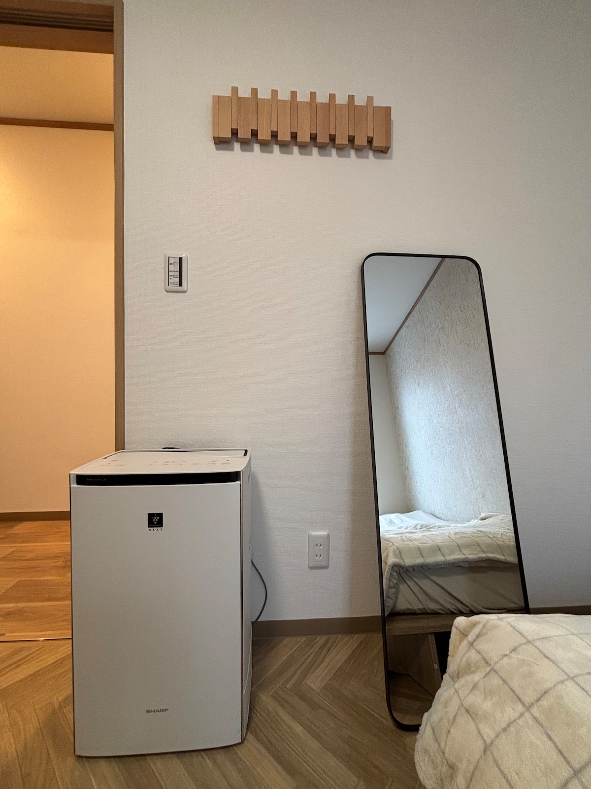

Ski fields
グラン・ヒラフ方面の雪山、スキー、スノーボードを楽しむ旅程に。

Quiet snow resort stay
羊蹄山の麓で、雪と森の静けさに包まれる滞在。高級ホテルの緊張感ではなく、木の温もりと暮らすような余白を大切にしたニセコの宿です。
Rooms
スキー、長期滞在、家族や友人との北海道旅行まで。華美な装飾よりも、清潔な室内、落ち着いた木の質感、冬の外気から戻ったときの暖かさが伝わる情報設計にしています。
Gallery
写真はAirbnb掲載写真を優先して配置しています。WordPress化時は同じ順序でメディアライブラリへ移植します。





Amenities
最終公開前にBeds24、OTA掲載情報、現地備品と照合します。
Around Niseko
国際スノーリゾートの空気感と、北海道らしい静けさを両立した周辺案内へ育てます。
グラン・ヒラフ方面の雪山、スキー、スノーボードを楽しむ旅程に。
朝の白い光、森の静けさ、部屋で過ごす時間を旅の価値として伝えます。
温泉、食事、買い出しなど、滞在中に必要な周辺情報を整理します。
Access
Reservation
予約手続き、料金計算、決済はBeds24側で行います。この仮UIはWordPress化時にBeds24公式プラグイン、埋め込みコード、または外部予約ページ導線へ差し替えます。
Date / Guests / Nights / Availability
Beds24で空室を確認